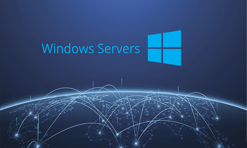

Experience
| Year | Position | Description |
|---|---|---|
| 12 June 2023 - now | Cloud Engineer PT Boer technology | Di jobs ini saya menghandle Handle Environment on Premise Cluster kubernetes Bank BRI, Provisioning Kubernetes, Configuration Resource k8s(service, deployment, RBAC, Ingress,Storage, Configmaps), Created monitoring enviroment k8s, Creating Visual Architecture kubernetes, Creating Dokument teknis and MOP, Troubleshooting error or Anomali, Configuration velero and minio, Configure Proxy in Containerd, Understanding EBPF, Assist Devops, Build Private Registry , Build kubedashboard (GUI K8s), Research technology in k8s, Build HIgress, Disaster recovery Cluster |
| 01 December 2022 - 23 May 2023 | Training LKS Jawa TImur |
: Basic linux, Configuration Webserver, Configuration Proxy squid or Proxy HA, Management DHCP. Management Acces Linux. File Sharing, DNS, Databases MYSQL, Configure Failover, Mail server,Web Mail, Create Certificate Authority and Certiffcate Root, Intemediate, and service, Management Storage, NTP Server, LDAP, Firewall in Linux , VPN or Tunnel , Monitoring Cacti and Icinga2, Create systemd service Window Server : Basic Configuration windows server, add service and remove, Add and Remove Routing, Management Group Policy, Management Active Domain Service, Management Active Directory, Management sharing File Server, Management Website(IIS), Creating Failover and Load Balancer Server, Create Certificate Authority and Sub Authority Docker : Basic Command, Pull and push Image, Create Dockerfile, Management container, Create Registry repository local Docker Image. Ansible : Basic command, Create (hosts, ansible.cfg, playbooks,roles, Vars,Host_vars, Group_Vars, And Template Jinja), Understanding Architecture Directory Ansible. Python Automation : Basic python, configuration web python, module Python, Get information Interface cisco, Change Hostname cisco, Configuration ip Address Interface cisco. Create Virtual env Virtualization : Proxmox, Vmware Exsi, kvm Cisco : Basic Configuration Cisco, Switching (STP,MLS,Etherchannel), Routing dynamic and Static, Management BGP(IBGP and EBGP), Redistribute Routing, VPN(dmvpn, ipsec), Management Address , Management Firewall, Access List, Management Privilege level and create view permission, Configuration cisco ASA |
| 01 December 2022- 01 March 2023 | Mentor Project Training Google IT Support in Aguna | Pada posisi ini saya menghandle 5 kelas online, yang diantar ada juga dari kelas orang kebutuhan khusus, di sini saya mengajarkan tentang basic IT dari penoperasian Operation system Windows dan Linux, security basic, dan basic it lain nya |
| 18 January 2021 - 01 May 2023 | Student Toolman in SMKN 1 Nglegok | Reinstall OS Computer, Maintance Network and Hardware,Clone OS,Setup Network(School,UKK lab), Suplesing FO, Setup Server majors engineering computers and Networking |
Skills
-
Devops
Saya dapat memanage beberapa tools pada devops dan menjalankan flow nya. Berikut tool yang pernah saya manage:
- Kubernetes : Create Cluster k8s, Create Monitoring Cluster, Undestanding Persistent Volumes and Ephemeral volume, Configure MetaLB on Cluster, Create Ingress Controller, Configure service,Ingress, Endpoint and Networking policy, Management RBAC, Management Certificate Cluster, House keeping image dangling and pods evicted, Configure Limitation resource, Configure daemonset,deployment, and Configure Kube dashboard Understanding CoreDns and Nodelocaldns, Testing Stres test using k6 , Management label and Taint, Configure Constraint on Kube Scheduler, Headlamp and Rancher, Provisioning Kube spray, upgrade Cluster, Management Rancher
- CI/CD : Create jenkins file, Troubleshooting jenkins, Create CI/CD in Gitlab
- Docker : Setup Docker, Docker Basic Command, Configure Docker volume, Configure Docker Network, Create Dockerfile, Create Docker compose, Create Docker Registry, Export Import Image manual, Configure Docker swarm, Configure Docker Service, Configure Docker Pontainer UI, Configure Docker Portainer Agent, Configure Docker Stack

-
Openstack
saya pernah melakukan riset dan juga memanage openstack. Pernah melakukan installation openstack kolla ansible dan devstack. saya juga melakukan operational Create Project, Create User Account. Create RC File. Create service, Configure Flavors, Configure External Network, Management Security Group, Create ssh keypair, Configure Vrouter, Configure Compute Instance, Add Floating IP, Configure Volume, Create Snapshot, import base image instance, Create Boot Volume, Create Port, Configure Stack,

-
System Administration
Saya memiliki pengalamn dalam System Administration, yang pernah saya pelajari adalah:
Linux Administration
-
Familiar with os linux distribution. Basic configuration, Management User and Remote Access , Configuratioins File Sharing, Management Domain Name Server (DNS), Caching DNS, Forwarding DNS, Sub DNS, DNS Slave, Create Certificate Authority Root, Intermediate and Sub Authority, Database MYSQL, Mail Server, Web Mail, NTP Server, Web Monitoring Cacti and Icinga2, Management DHCP Server and DHCP Relay, Proxy Server Filtering,Management User,Management Acces Internet, Management Bandwith, Raid Level, VPN.

Windows Administration
-
Management Routing, VPN, DNS Server (master/slave, recursive), Web Server ( IIS ), Certificate Authority, Group Policy, Active Directory Domain Service, Configure file Sharing Server, Management Users, Group, and Computers Management, Routing access, Windows Backup and Restore, Configure Failover and Loadbalancing, Configuire Windows Server.

Cisco
-
Familiar with device cisco IOSXR, Update IOS and SMU(IOS XR), Basic Configuration, NTP,Replace Configuration, commit and rollback Configuration, Management User and Remote Access, Switching (Vlan Trungking,Trunk,VTP, STP), Voip,Security port on Switch, Management Dhcp, Interface Bundle,MTU,Intervlan, Permission rule ACL and preser view, Firewall, Routing dynamic and static, Reditribute Routing, Configure IBGP,EBGP, BGP Attribute. Configure VRF, Failover, VPN and ipsec, DMVPN, Configure l2vpn and l3vpn
-